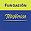

[ proyecto de Net.Art ]
con motivo de la exposición:
La propuesta es lanzar a la red un trabajo interactivo, entendido como estrategia de participación y de comunicación. La convocatoria consiste en enviar imágenes y textos de historias de fábricas significativas de un cierto tipo de arquitectura industrial, en proceso de destrucción, con la que el participante tenga alguna vinculación por vecindad, parentesco o interés de alguna clase, para ampliar y documentar así las diferentes historias. En la exposición, se mantendrá un puesto de ordenador abierto al público para que todo el que lo desee tenga oportunidad de intervenir. Toda participación quedará registrada, y podrá así ser visitada en la red.
[ Ver convocatoria ]
La Fábrica es un proyecto de Marisa González para la Fundación Telefónica, cuya presentación se hace en el marco de PHOTOESPAÑA 2000. Detrás del argumento de esta exposición, hay una fábrica real, un edificio histórico, característico del desarrollo industrial regional en el que se inserta, y que al finalizar el siglo de su existencia ha sido desprovisto de su función, por el anacronismo de sus instalaciones y maquinaria. La inmediatez del derribo y la visión de los interiores y exteriores ha suministrado el argumento de esta exposición, así como la posibilidad de determinar el carácter procesual de esta. El registro del ojo fotográfico y de la cámara de video abarca la destrucción fraccionada, la lenta desaparición en un tiempo manual, que obliga al reconocimiento del territorio y del paisaje que mediante la técnica del "despliegue" horizontal, elimina el límite en la secuencia. El proyecto se resuelve así en una actuación consecuente con la apropiación y transformación recíprocas, que precipitan un nuevo relato, con ayuda de los instrumentos que le brindan las nuevas tecnologías. El reciclado sigue siendo, no obstante, el procedimiento preliminar, que antecede a cualquier nueva configuración o intervención, favoreciendo una comprensión global acerca de la unidad de su trabajo.
Al igual que el catálogo de la exposición, consta de siete apartados, división que corresponde no sólo a las siete secciones sobre las que se ha organizado y distribuido la información que contiene, sino también a los siete silos que constituyen la estructuran del edificio de la fábrica. El número "7" se reproduce en todas las clasificaciones, con el fin de enfatizar el carácter simbólico de los siete silos, y su protagonismo en el origen de este proyecto.
El diseño se basa en este elemento y la caida de los silos, que es el acontecimiento determinante. El inventario de los contenidos también se remite a este número. Un fragmento de la instalacion de video a 3 pantallas es incluido en monocanal en la sección derribo.
CALENDARIO:
Mayo,
Junio, Julio de 2000
Salas
Temporales de la Fundación Telefónica. C. Fuencarral 1. 28004
Madrid.
Septiembre
de 2000
Seminario
Internacional de Arquitectura Industrial. Depósito de Aguas, Vitoria.
Noviembre-Enero
de 2001
Sala
REKALDE, edificio CEDENT, Barakaldo, Vizcaya.
[
continuará
la itinerancia ]
< web > Marisa González:
Patrocinada por |
 |
| diseño net.art | |